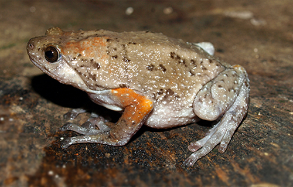
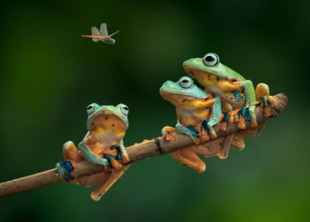

Copper frog (two-part nomenclature: Hoplobatrachus rugulosus) (English name: Chinese Edible Frog, East Asian Bullfrog, or Taiwanese Frog; Chinese name: 虎皮 蛙 -a-oa, meaning "tiger skin frog") is a frog species in the Ranidae family. It is found in Cambodia, China, Hong Kong, Laos, Macau, Malaysia, Myanmar, Philippines, Taiwan, Thailand, and Vietnam. Its natural habitats are freshwater marshes, seasonal freshwater marshes, arable land, grasslands, rural gardens, urban areas, ponds, aquaculture ponds, open pits, irrigated land, agricultural land with seasonal flooding, and canals and ditches. Copper frogs are amphibian, adapted to shallow living - water.
Frogs live in damp places, near water banks (ponds, swamps). Frogs forage at night. The bait is usually insects, crabs, fry, worms, snails, etc. Frogs hide in caves during the winter (wintering phenomenon). Frogs are heat-converting animals.
They move thanks to four limbs (on land). In addition, the copper frog can also jump to go towards the need to go.
Adult frogs, to the breeding season (in late spring, after the first showers), male frogs call female frogs to pair. The female frog piggybacked the male frog on his back, the male frog hugging the belly of the female frog looking for butter to lay. Where the female frog lays, male frog sitting on his back watered the sperm there, fertilization occurs outside the mother's individual body (external fertilization).
Small insects ...
Limnonectes blythii is a species of frog in the Ranidae family. It is found in Indonesia, Laos, Malaysia, Myanmar, Singapore, Thailand, Vietnam, and possibly Cambodia. Its natural habitats are subtropical or tropical moist lowland forests, subtropical and tropical moist cloud forests, and rivers. It is increasingly rare due to habitat loss.
Limnonectes blythii is a large stream frog with individuals with a muzzle length of 230 - 260 mm (Boulenger 1920; Taylor 1962). L. blythiil's oval head is narrow, longer than it is wide. The nostrils are located closer to the muzzle than the eyes and the canthus rostralis is not clear. The loreal area is slightly concave and oblique. The distance between the eyes is shorter than the length of the upper eyelid. The submerged Tympanum is set back from the eye at a greater distance than the tympanum diameter (Boulenger 1920; Taylor 1962). Tympanum has dimensions of 2 / 5-3 / 5 eyes (Boulenger 1920). This species has an ultrasonic fold that begins at the anterior edge of the eye margin, curves around the eardrum and terminates above the arm near the anterior edge of the mouth (Taylor 1962). Jaws slightly protruding. The limbs are moderately long. Two palms with three tubers with two flat outer bulbs are fused together. The tubers are small in size. The fingers are slightly swollen at the head. The first finger is longer than the second and the third finger has distinct lateral skin folds (Boulenger 1920; Taylor 1962). The tibia is 3 to 4 times longer when it is wide (Boulenger 1920). When adorned with the body, the tibia bone connection reaches the nostrils. The inner endometrial tubes are stretched, compressed and more than half the length of the first toe. The tip of the toe is dilated (Taylor 1962). The skin of the tibia is 3 to 4 times longer when it is wide (Boulenger 1920). When adorned with the body, the tibia bone connection reaches the nostrils. The inner endometrial tubes are stretched, compressed and more than half the length of the first toe. There are no external metatarsal bulbs. The toes have large tubers under the skin and have a complete membrane - with the fifth toe has distinct lateral skin folds. The tip of the toe is dilated (Taylor 1962). The skin of the tibia is 3 to 4 times longer when it is wide (Boulenger 1920). When adorned with the body, the tibia bone connection reaches the nostrils.
Indonesia, Lao People's Democratic Republic, Malaysia, Myanmar, Philippines, Singapore, Thailand, Vietnam
8 Ton That Thuyet, My Dinh, Tu Liem,
Ha Noi, Viet Nam.
0966469746 (Do Van Huan)
0666729716 (Nguyen Minh Nghia)
0522697743 (Duong Thanh Binh)
0849818969 (Le Van Phuong)
0373485924 (Nguyen Thanh Lam)
KawasakiZoo@gmail.com